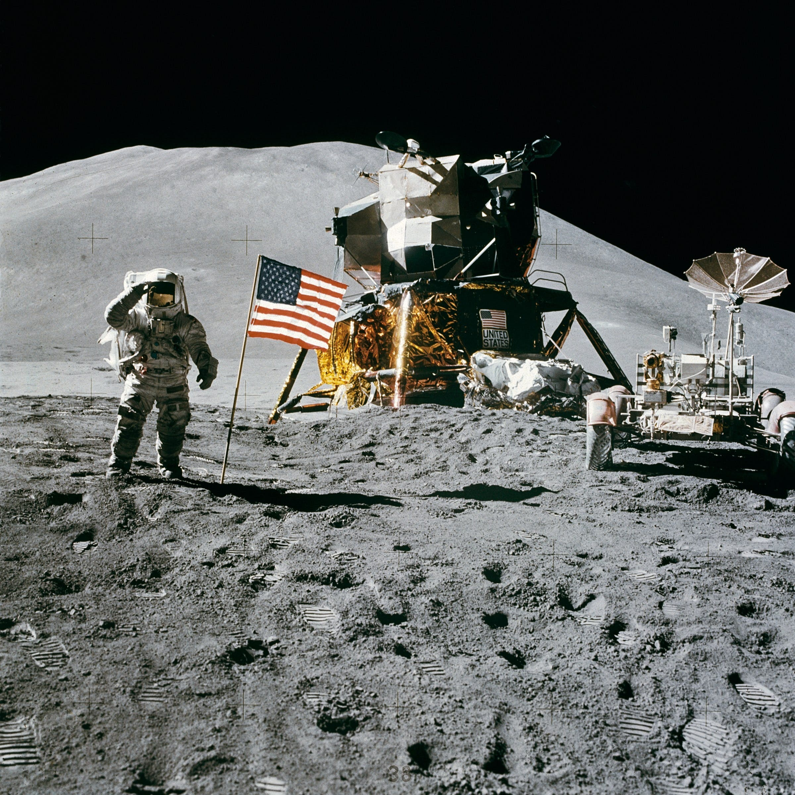

Historia resumida de la NASA
La Administración Nacional de Aeronáutica y del Espacio (NASA, por sus siglas en inglés) fue establecida el 29 de julio de 1958 como respuesta a la carrera espacial entre Estados Unidos y la Unión Soviética durante la Guerra Fría. La NASA se fundó con el objetivo de explorar el espacio y desarrollar tecnologías aeroespaciales avanzadas. Uno de los hitos iniciales más destacados fue el programa Mercury, que puso al primer estadounidense, Alan Shepard, en el espacio en 1961. Le siguieron los programas Gemini y Apollo, culminando con la histórica misión del Apolo 11 en 1969, cuando los astronautas Neil Armstrong y Buzz Aldrin se convirtieron en los primeros humanos en caminar sobre la Luna.
Después de las misiones Apollo, la NASA continuó explorando el espacio con programas como Skylab y las misiones del transbordador espacial. El transbordador espacial permitió la construcción y mantenimiento de la Estación Espacial Internacional (EEI), un proyecto internacional en colaboración con varias naciones. A lo largo de los años, la NASA ha lanzado una variedad de misiones robóticas para explorar otros planetas, lunas y cuerpos celestes en el sistema solar. Además, ha desarrollado tecnologías innovadoras, como los telescopios espaciales Hubble y Kepler, que han revolucionado nuestra comprensión del universo.
En las últimas décadas, la NASA ha centrado su atención en la exploración tripulada y no tripulada del espacio profundo, con el objetivo de enviar astronautas a Marte en el futuro. También ha colaborado con agencias espaciales de todo el mundo en proyectos conjuntos y ha fomentado la participación del sector privado en la exploración espacial. En resumen, la NASA ha desempeñado un papel crucial en la exploración espacial, desde los primeros vuelos espaciales hasta la continua búsqueda de conocimiento sobre el universo y el desarrollo de tecnologías pioneras.